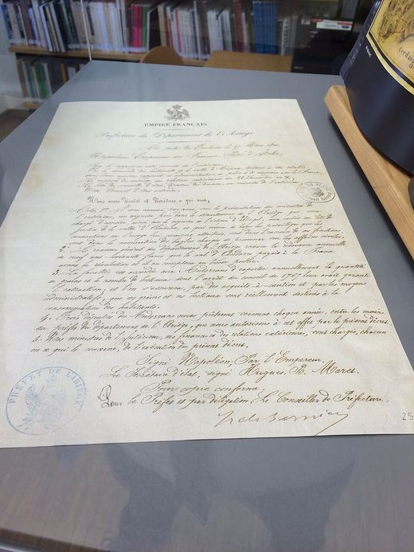

1806El decret de NapoleóContemporània
Tretze anys sense França: el decret de Napoleó que va tornar el coprincipat
Context històric
El 1793 la França revolucionària havia renunciat al títol de copríncep i havia deixat de cobrar la quèstia, el tribut que Andorra pagava a la Corona. Les Valls havien quedat sota el bisbe d'Urgell com a única autoritat i havien perdut franquícies i privilegis econòmics. Tretze anys després, el vincle amb França continuava trencat.
Andorra no s'hi va resignar. Una delegació va preparar arguments per convèncer el poder francès: recordava la neutralitat andorrana en els conflictes entre França i Espanya i lamentava haver perdut el lligam amb França. El 27 de març de 1806, Napoleó I va signar a París un decret que tornava els privilegis, acceptava de nou la quèstia i fixava les exportacions segons el decret de 1767. França recuperava així la cosobirania, la justícia i les relacions comercials.
La historiografia ho considera un èxit diplomàtic andorrà. Els motius de Napoleó, en canvi, no consten a les fonts consultades i només es poden formular com a hipòtesis.
Dades, lectures i dubtes
- Dada
- El 27 de març de 1806 Napoleó I va signar a París el decret que tornava els privilegis, acceptava de nou la quèstia i fixava les exportacions segons el decret de 1767.
- Interpretació
- La historiografia ho considera un èxit diplomàtic andorrà.
- Hipòtesi
- Els motius de Napoleó: les fonts consultades no els donen i només es poden formular com a hipòtesis (per exemple, la idea que volia annexionar-se Andorra).
Multimèdia

Fonts
- El Periòdic d'Andorra, «Aniversari del Decret de Napoleó que va recuperar el coprincipat el 1806»
- Viquipèdia, «Andorra durant la Revolució Francesa»
- Viquipèdia, «Nova Reforma»
- historia.ad, «Món contemporani»
- Archontology.org (Bulletin des lois, núm. 86, ítem 1463; data del decret)